A complete scientific knowledge archive on Pomacea diffusa husbandry — taxonomy, color genetics, water chemistry, breeding biology, nutrition, and pathology. All in one authoritative reference.
Pomacea diffusa (Blume, 1957), long misidentified in the hobby as P. bridgesii, is a freshwater gastropod mollusc of the family Ampullariidae — the "Apple Snails." Unlike its invasive cousin P. canaliculata, P. diffusa poses negligible risk to healthy aquatic plants, which makes it uniquely suited to planted aquaria. The common name "Mystery Snail" arose because early aquarists could not explain how juveniles appeared in sealed tanks, years before its above-waterline egg-laying biology was described.
Familiarity with the key external structures of P. diffusa is essential for health monitoring, sexing, and recognising early signs of pathology.
Wild P. diffusa populations experience pronounced wet/dry seasonal cycles with water temperatures ranging 22–30 °C, pH 6.8–7.6, moderate general hardness (6–14 dGH), and minimal water movement. In captivity, targeting the upper end of these ranges — pH 7.4–7.8, GH 12–18 dGH, temperature 25–28 °C — provides optimal conditions for shell integrity, immune function, and reproductive fitness. The natural detritus-rich diet is approximated in captivity through a combination of biofilm cultivation, blanched vegetables, spirulina-based supplements, and calcium-rich supplementation such as cuttlebone.
Shell and body colour in Pomacea diffusa are controlled by at least three independently
assorting genetic loci governing periostracum pigmentation, whorl banding, and soft-tissue (foot + mantle) colour.
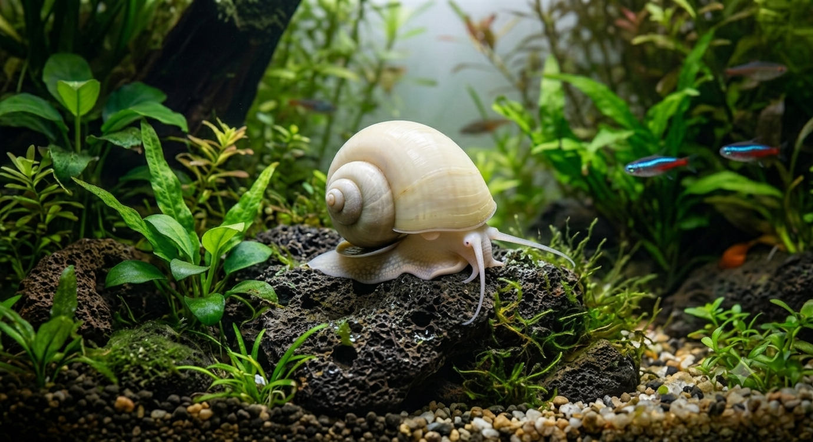
Complete melanin suppression at both shell and body loci. Snow-white shell with cream-ivory foot — the classic albino phenotype; thinner periostracum makes it more sensitive to acidic water.
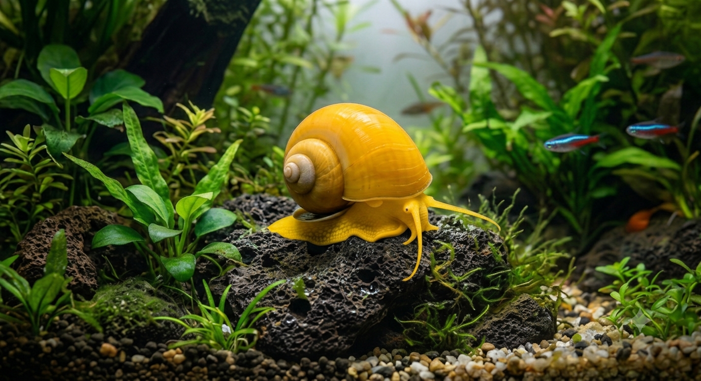
Carotenoid pigments dominate the periostracum, yielding lemon-to-amber shells. The "Gold Ivory" variant (yellow shell + white foot) is the hobby's best-selling morph.
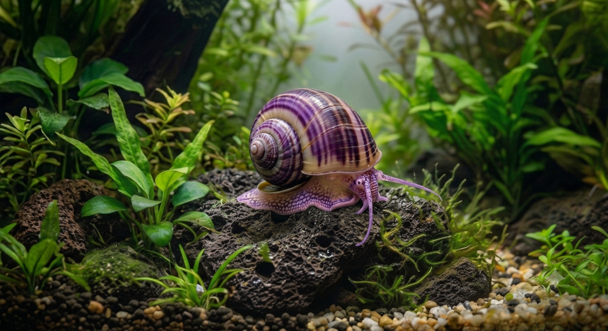
Multi-locus recessive architecture creates the deep violet hue via partial melanin reduction + structural colouration in the calcite layer. Colour intensity is highly pH-dependent — fades markedly below pH 7.0.
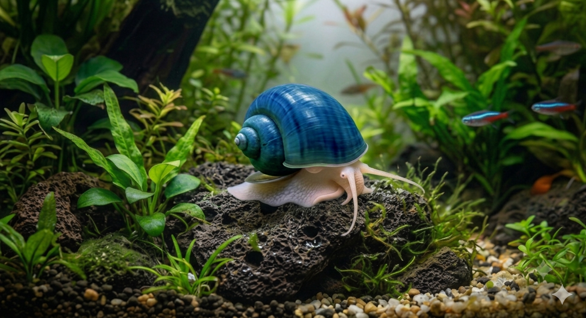
The rarest phenotype — true blue arises from structural (thin-film) colouration in the calcite layer beneath a nearly depigmented periostracum. Extremely pH-sensitive; not recommended for beginners.
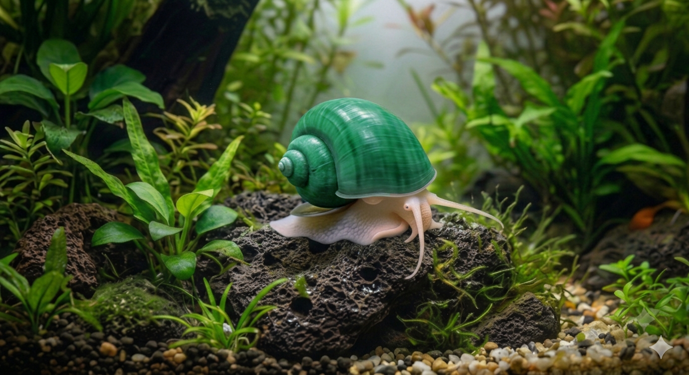
Co-expression of residual melanin and carotenoid pigments creates warm olive-to-sage green shells. Colour saturation is strongly diet-responsive — spirulina and green vegetables deepen the hue.
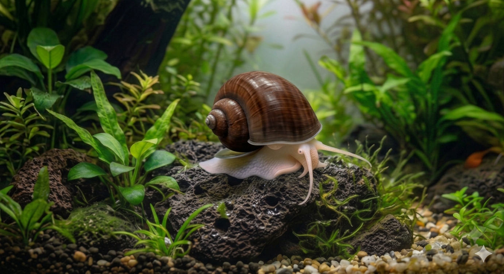
High melanin expression yields rich warm-brown shells closest to the ancestral wild-type. The thick periostracum confers the greatest natural resistance to mild acid erosion.
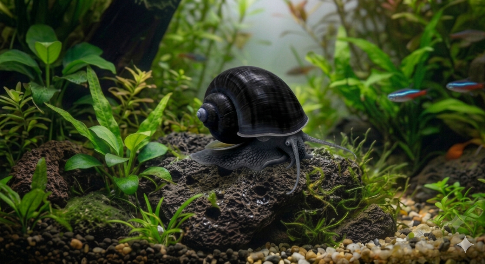
Maximum melanin at both shell and body loci. Juveniles hatch caramel-brown and darken over 4–8 weeks. The dense melanin periostracum is the most chemically resistant of all domestic morphs.
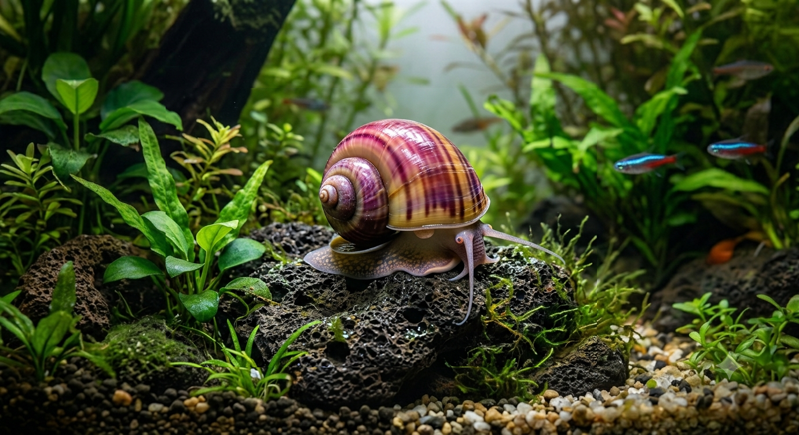
Rose-to-fuchsia phenotype driven by specific carotenoid pathways. Highly nutrition-dependent — astaxanthin-rich foods maintain vivid colour; poor diet fades shells toward pale salmon within weeks.
Everything a first-time keeper needs: nitrogen cycle fundamentals, equipment selection, water
parameter science, plant selection, and common setup mistakes.
P. diffusa grazes periphytic biofilm on leaf surfaces — it does not attack living rooted plant tissue. The four species below are reliably safe and provide excellent biofilm surfaces for continuous grazing.
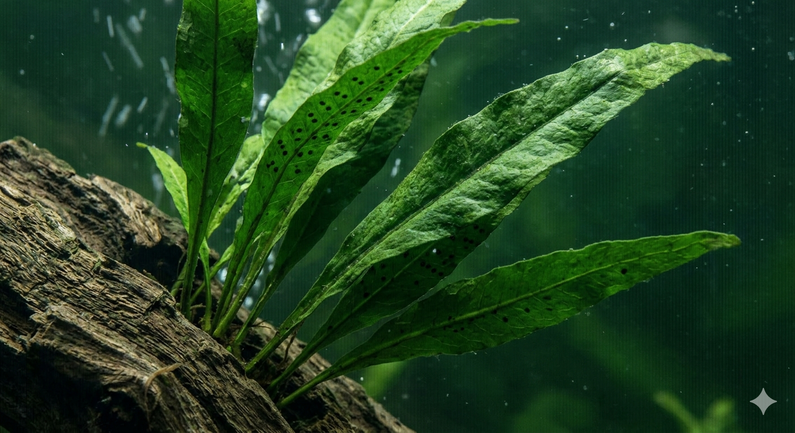
Thick, leathery leaves ignored by snails entirely. Attaches to driftwood — no substrate needed. Excellent biofilm cultivator that thrives in the same GH/pH range as mystery snails.
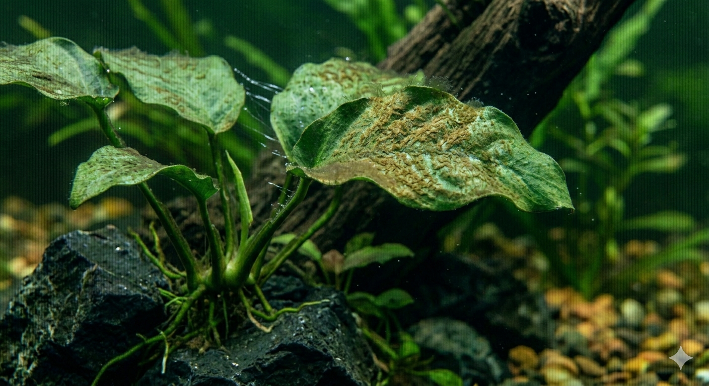
Waxy, unpalatable leaves snails won't eat. Broad leaf surfaces accumulate biofilm that snails eagerly graze — keeping the plant surface clean naturally.
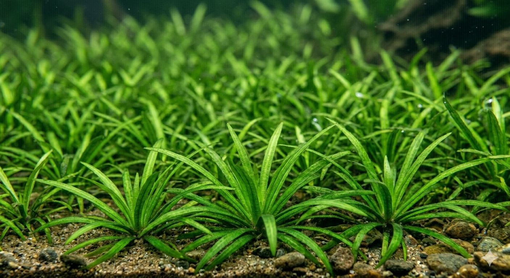
Grass-like foreground carpet; snails navigate freely between blades. Thrives in hard water. Provides ground-level cover and extensive biofilm surface area.
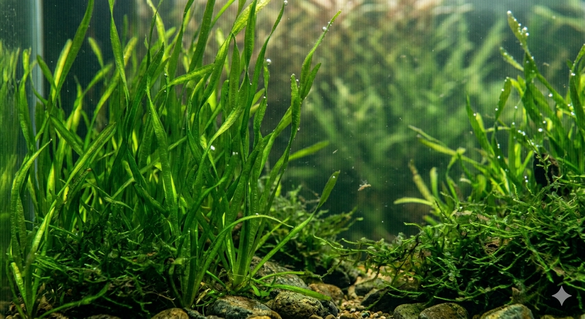
Java Moss accumulates biofilm across its entire surface for continuous snail grazing. Vallisneria provides tall background coverage with zero palatability risk.
Compatibility must be evaluated across three independent threat vectors shell-crushing predation opportunistic soft-tissue nipping chemical toxicity.
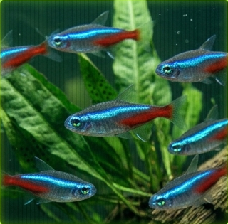
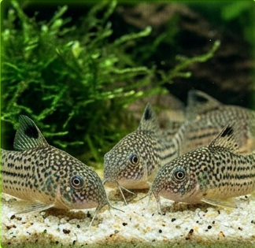
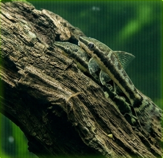
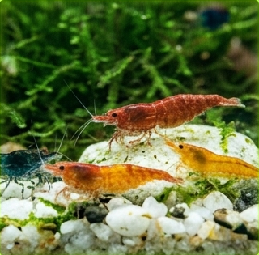
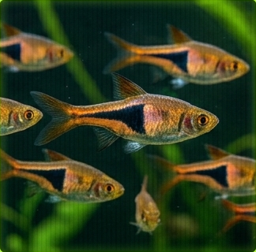
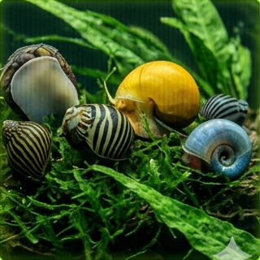
Nutritional biochemistry specific food protocols calcium homeostasis management and the daily weekly maintenance schedule.
P. diffusa is a detritivore-herbivore with an omnivorous tendency in captivity. Three nutritional priorities must be balanced simultaneously: adequate calcium intake (for shell biomineral deposition), protein (for soft-tissue maintenance, mantle secretion, and reproductive output), and carotenoids (for pigmentation health and immune function). Overfeeding any single food category while neglecting others creates nutritional imbalances that manifest as shell erosion, poor coloration, or reduced fecundity.
Shell deposition rate is directly proportional to the concentration of dissolved calcium (Ca²⁺) and bicarbonate (HCO₃⁻) in the water, the ambient pH, and the snail's dietary calcium intake. At pH 7.4–7.8 with GH 14–18 dGH, the water is supersaturated with respect to aragonite — the mantle can deposit new shell material efficiently. Below pH 7.0, the water becomes aragonite-undersaturated; dissolution exceeds deposition and shells thin, pit, and eventually perforate. Dietary calcium from blanched kale, broccoli stems, and cuttlebone provides the supplemental calcium needed when water hardness alone is insufficient for maximum shell repair rates.
Complete reproductive biology from dioecious sexing through incubation humidity science, hatchling first-week protocols, and colony population management strategies.
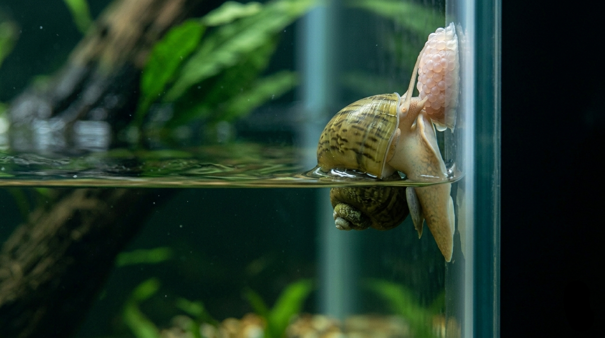
Female P. diffusa ascend above the waterline — typically 1–3 hours after lights-off — and deposit a compact, calcified egg mass on a dry surface: glass, lid underside, or filter equipment above the water. Each clutch contains 50–200 spherical eggs (1.5–2 mm diameter) arranged in tight rows within a pink-to-magenta, slightly waxy, rigid matrix that hardens on air contact within minutes. Lower water level 8–10 cm from the lid; increase protein and calcium feeding 10–14 days prior. Stored sperm can fertilise multiple successive clutches over months.
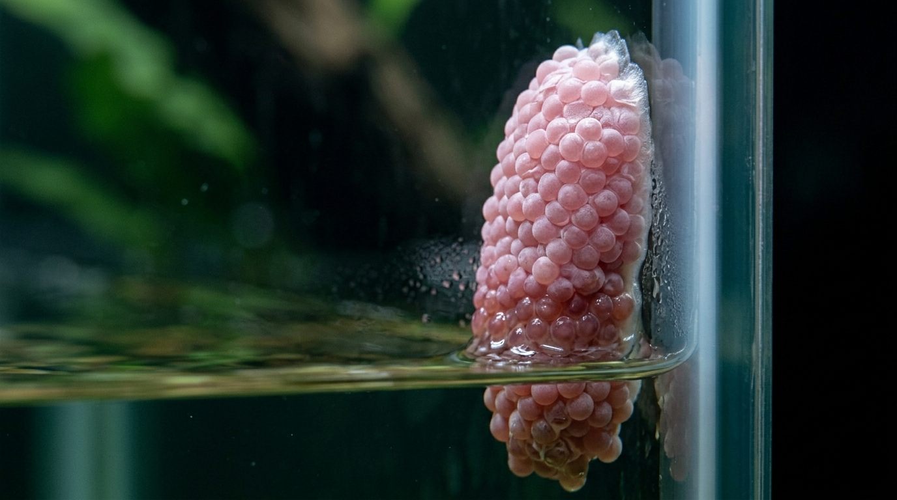
Target microclimate: 80–90% relative humidity — high enough to prevent embryo desiccation, but with no direct water contact. In a tightly covered aquarium with water at 26–28 °C, evaporation naturally maintains this band. For transferred clutches: place on an elevated platform above 1–2 cm of water. Mist container interior lightly every 48 hours if clutch appears dusty-dry. At 26 °C, development completes in 16–20 days; at 22 °C, 25–35 days. Never peel or manually separate eggs — the calcified matrix provides essential structural support and humidity regulation.
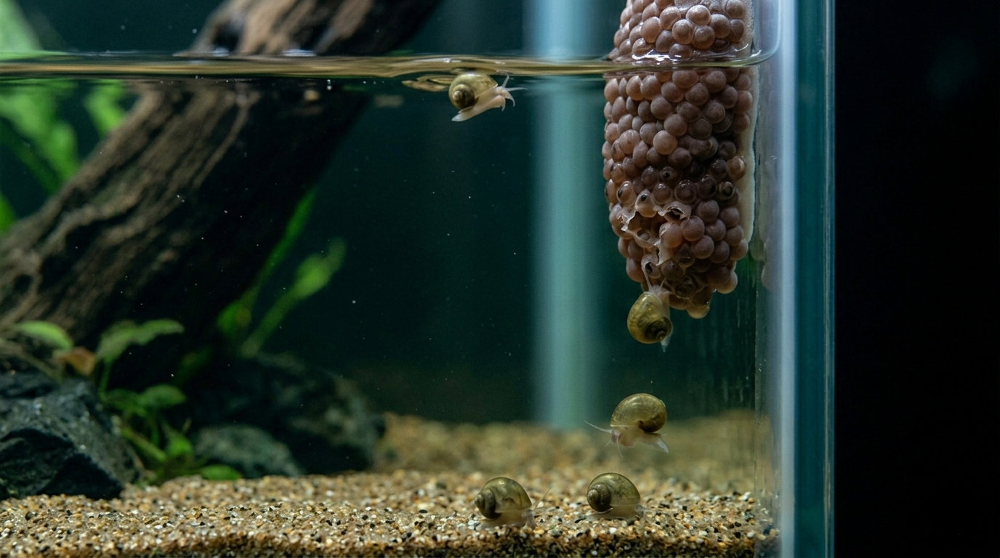
As hatching approaches, the clutch shifts from pink-magenta toward dark cocoa-brown. Hatchlings dissolve their egg-cell wall enzymatically, then drop into the water below over 12–36 hours. Critical first-week nutrition: hatchlings with access to natural algae biofilm within 8 hours of water entry achieve survival rates of 88–92%; those fed exclusively on commercial powder foods achieve only 60–68%. Pre-grow algae in the tank before anticipated hatching. Cover all filter intakes with fine sponge — hatchlings are 2–3 mm and easily ingested by unprotected intakes.
P. diffusa is strictly dioecious — separate male and female sexes; no hermaphroditism. Accurate sexing requires direct visual inspection of the mantle cavity when the snail is fully extended and climbing vertical glass.
Always maintain a minimum 2–4 inch (5–10 cm) dry air gap between the water surface and the tank lid. Without this "Reproductive Dry Zone," gravid females cannot deposit their clutches and may become egg-bound — a condition where calcified egg masses cannot be expelled, causing internal injury and death within days to weeks. Egg-binding is one of the most common preventable causes of female mystery snail mortality in captivity. If a female is observed repeatedly attempting to exit the water over 24–48 hours without successfully laying, lower the water level immediately and inspect the lid area for adequate dry surface.
Method 1 — Eliminate the Dry Zone: Maintain water level within 2–3 cm of the lid; no accessible dry surface = no successful egg deposition. Method 2 — Clutch removal: Remove fresh clutches within 24–48 hours of deposition by scraping gently with a credit card — before the matrix fully hardens. Method 3 — Single sex: Keep only females or only males. Note: females may carry stored sperm at time of purchase and produce fertile clutches for several months even without a male present. Removing the male does not immediately stop reproduction.
Shell condition is the primary bioindicator of systemic health in P. diffusa.
Early identification and intervention can fully arrest
most shell pathologies and allow partial recovery.
The aperture growth edge appears glassy and paper-thin. The mantle epithelium cannot deposit aragonite fast enough — Ca²⁺ concentration is inadequate, pH is below supersaturation threshold, or dietary calcium is deficient.
Localised pinholes and rough pitting in existing whorls. Carbonic acid (H₂CO₃) dissolves the aragonite biomineral directly. When the periostracum is chemically damaged, dissolution accelerates. Existing pits do not repair — only new aperture growth will be healthy.
Healthy: Firm, flat, completely seals aperture. Early warning: Slightly sunken/deflated — calcium or protein deficiency. Critical: Loose, detaching or absent — emergency. Snails sleep up to 13 hours; confirm death by odour test (H₂S).
Copper (Cu²⁺) is acutely lethal to all molluscs and crustaceans at concentrations as low as 0.015–0.02 mg/L — well below what standard aquarium test kits can reliably detect. The mechanism of toxicity involves Cu²⁺ binding to haemocyanin (the copper-based oxygen-transport protein in gastropod haemolymph), disrupting gill membrane function, and inhibiting key enzymatic processes. Exposure causes rapid respiratory failure. There is no reversible threshold — any detectable copper in a mystery snail tank represents a lethal risk. Always read the full ingredient list of any aquarium product before use. Note that many commercial fertilisers list copper as a micronutrient (often as copper sulfate or copper EDTA) at concentrations that, while safe for fish, exceed the lethal threshold for snails.
This wiki is Vol. 01 of a growing multi-species archive. Each volume covers one genus in full scientific depth.